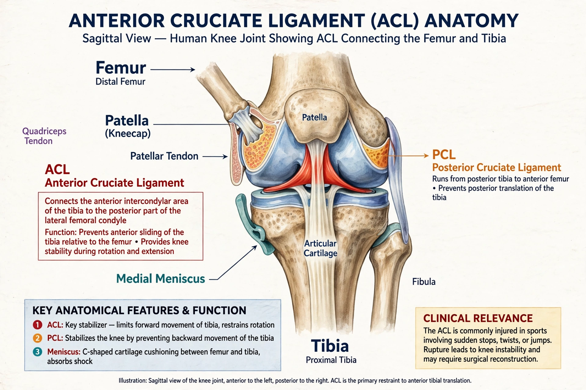

The anterior cruciate ligament (ACL) is one of the key ligaments of the human knee, connecting the femur to the tibia and stabilising the joint against anterior translation and rotation.

The ACL attaches to the intercondyloid eminence of the tibia and the lateral femoral condyle, consisting of anteromedial and posterolateral bundles of collagen fibres.
ACL tears are common sports injuries, often from sudden pivoting, landing or direct blows, frequently accompanied by meniscus injury. Diagnosis uses the Lachman and pivot-shift tests and MRI. Tens of thousands occur annually in the United States, with higher rates in female athletes in some sports.
Management ranges from rehabilitation to surgical reconstruction using autograft (patellar, hamstring or quadriceps tendon) or allograft, followed by months of physiotherapy.
See also: Arthrocentesis, Anatomical terms of motion